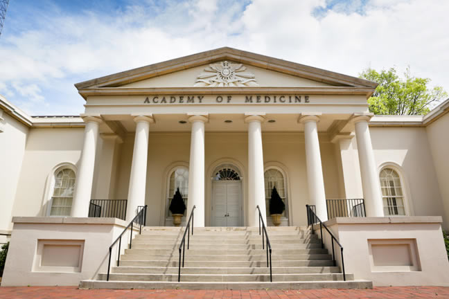

Venue
A historic stage for a timeless art.

Khayaal 2015 will take place at The Historic Academy of Medicine at Georgia Tech. A tribute to the southern reputation of charm and elegance, the facility displays Doric columns, an entry portico, black and white Italian marble floors in a beautiful rotunda accented by the famous Czechoslovakian chandelier seen in the movie, "Gone with the Wind." The Academy offers old-world elegance and style of days gone by, in the heart of bustling midtown Atlanta.
Read more about the venue here.
Location
875 West Peachtree St. NW
Atlanta, GA, 30309
Parking
Parking is free and is located behind the venue.